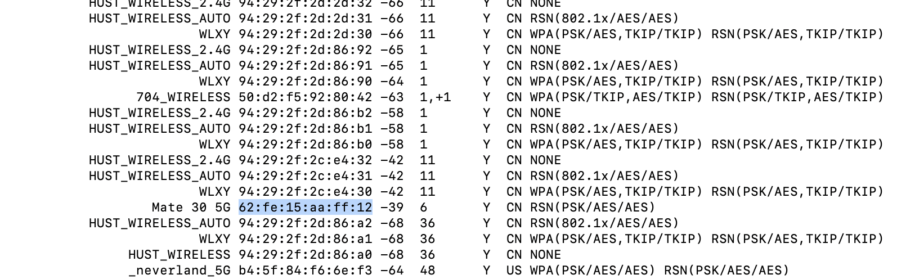
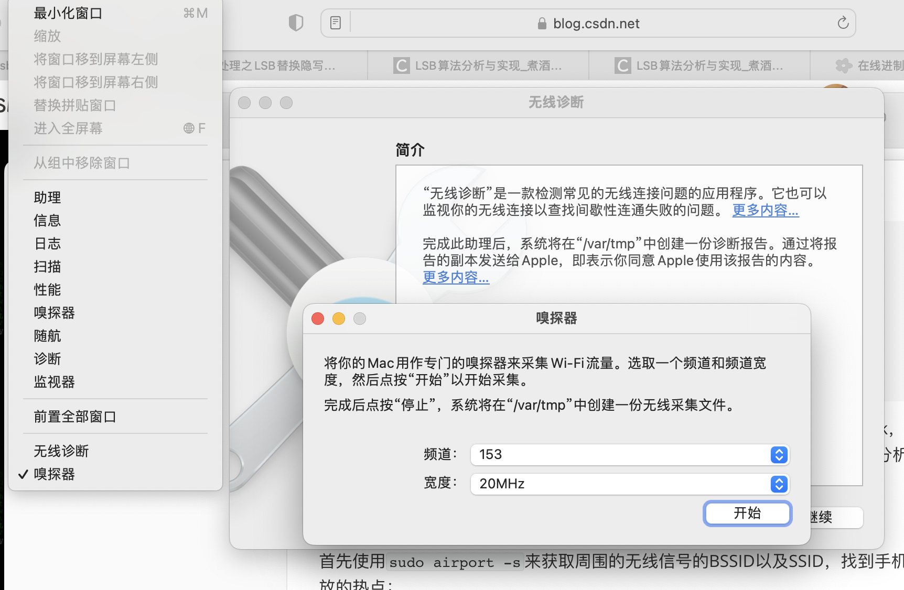
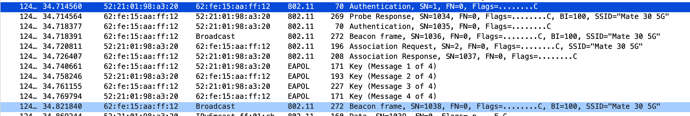

实验环境为MacOs，使用的工具为airport、mac自带的嗅探器以及wireshark，以手机热点Mate 30 5G作为测试AP，实验目的为抓去wifi接入认证的数据包，并分析wifi认证的过程。
首先使用sudo airport -s来获取周围的无线信号的BSSID以及SSID，找到手机开放的热点：

然后将电脑的网卡改为监听模式，具体步骤：
- 打开无线诊断
- 点击左上角窗口
- 选择嗅探器并开始
- 在wireshark里，点击设置图标，将网卡勾选monitor选项。
- 
这样以来，wireshark就可以监听802.11的wifi数据包了。
最后，用另一台设备连接手机，wireshark进行抓包，获得关键数据包如下：

分析数据包，可以得到wifi接入认证的过程：
- 主机向AP发送probe req
- AP回应主机probe rep
- 主机和AP进行认证，确认对方是不是802.11设备（互发aut包）
- 主机和AP进行关联，发送ass包
到此为止，主机与AP建立好了无线链路，下一步就是4次握手的过程了。